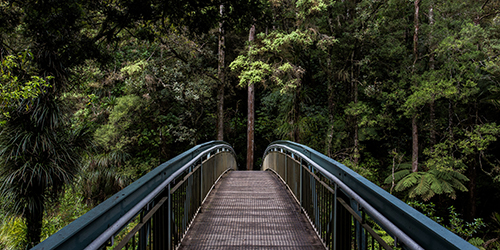

Native Forests
New Zealand is famous for its beautiful native bush and forests. Many walking tracks travel through peaceful green forests.
The bush climate is often cool and wet with lots of rainfall.
In te reo Māori, forest is called ngahere.


New Zealand is famous for its beautiful native bush and forests. Many walking tracks travel through peaceful green forests.
The bush climate is often cool and wet with lots of rainfall.
In te reo Māori, forest is called ngahere.
New Zealand’s native forests are some of the most beautiful and unique in the world. The bush is filled with tall trees, green ferns, moss-covered ground and native plants.
Many walking tracks pass through thick native bush where people can hear birds such as the kiwi, tūī and kererū.
Famous forests such as Waipoua Forest are home to giant kauri trees that are hundreds of years old.


New Zealand's bush provides an important habitat for native wildlife. Many birds, insects and reptiles depend on native forests for food and shelter.
Species such as the kiwi, tūī, fantail and kererū can often be found in bush areas.
Protecting native forests helps preserve New Zealand's unique biodiversity and natural environment for future generations.